Sensors, materials and amplifiers
How a piece of metal on your scalp turns brain activity into a number — the electrochemistry, the materials, and why every channel is a subtraction.
A student asked the question this page exists to answer: how does the electricity actually get from the brain into the computer? The answer runs through electrochemistry, metallurgy and amplifier design, and knowing it is what separates someone who can run a session from someone who can fix one.
1. From neurons to a puddle of gel
What "electricity" means here
Electricity is just charge that moves. Charge comes in two kinds, which we call positive and negative; opposite kinds attract, like kinds push apart.
In a metal, the things that move are electrons — the tiny negatively charged particles that belong to atoms, but which in a metal are free to drift from atom to atom. That is exactly why metals conduct and wood does not.
In water, and therefore in you, electrons do not roam free. What moves instead are ions: atoms that have lost or gained an electron, so they carry a charge and drift through the liquid. Table salt dissolved in water splits into sodium ions (written Na⁺, positive because the sodium atom lost an electron) and chloride ions (Cl⁻, negative because it gained one). Your blood, the fluid around your brain cells and the gel under an EEG electrode are all salty water full of ions.
Two more words you will need:
- Current is charge flowing past a point — electrons drifting down a wire, or ions drifting through fluid.
- Voltage is the difference in electrical push between two places. It is like height: water flows downhill, charge flows from higher voltage to lower. And like height, it only ever means something relative to somewhere else — remember that sentence, because the whole design of an EEG system follows from it.
How a brain makes any of this
A brain cell does its work by letting ions in and out through its outer membrane. Sodium rushes in here, potassium leaks out there. Every one of those movements is charge moving, which means every working neuron makes a tiny current in the salty fluid around it.
While that is happening, charge is being pulled in at one end of the cell and pushed out at the other. A pair of opposite charges a short distance apart like that is called a dipole — think of a very small, very weak battery, with a plus end and a minus end, sitting in the tissue.
One cell's dipole is hopelessly small to detect from outside the head. Two things rescue us:
- Numbers. Tens of thousands of cells in the same patch of brain do the same thing at the same moment when they are responding to the same event.
- Alignment. The cells in the outer layer of the brain — the cortex — are stacked side by side, pointing the same way, like trees in a plantation. Their little batteries therefore point the same way too, so their effects add up instead of cancelling out. Cells pointing in random directions would cancel and we would see nothing.
Getting from there to the scalp
The current from those aligned dipoles does not travel along a wire; it spreads out through everything around it — the fluid the brain floats in, the skull, the scalp — the way heat spreads through a pan. Physicists call that spreading volume conduction, and two consequences of it shape everything else in this tutorial:
- The skull is a poor conductor, so the pattern is blurred by the time it reaches the surface — like reading a page through frosted glass. An electrode on the scalp never sees one small spot of brain; it sees a smeared-together region a few centimetres across.
- What arrives is minuscule. The ongoing EEG is 10–100 microvolts (µV, millionths of a volt), and the P300 response this speller hunts for is about 5 µV. An AA battery is 1.5 volts — three hundred thousand times bigger. You are listening for a whisper from the far side of a stadium, while the crowd — mains hum from the wiring in the walls, a blink, a clenched jaw — is shouting.
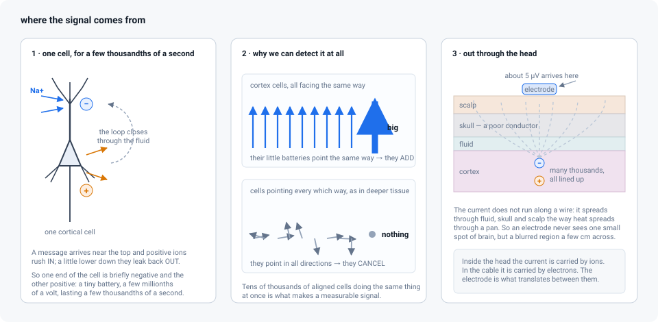
So: in your head, the current is carried by ions. In the cable to the amplifier, it is carried by electrons. Those are two different things, and something has to translate between them. That something is the electrode.
2. The electrode is a chemical reaction
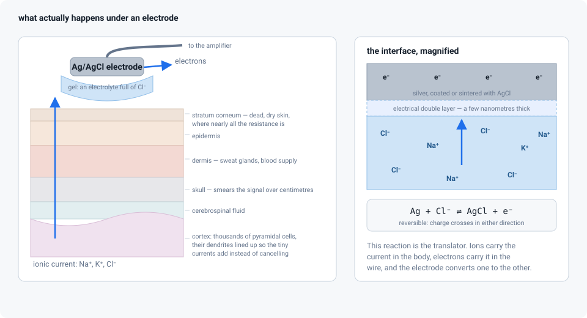
What happens the moment metal touches gel
Put a piece of metal into salty liquid — which is what you do every time you fill an electrode with gel — and chemistry starts immediately at the surface. Some atoms of the metal react with the liquid: a metal atom may give up an electron and drift off into the liquid as an ion, or an ion from the liquid may grab an electron and stick to the metal.
This does not go on forever. After a moment it settles, having left a little extra charge of one kind on the metal and the opposite kind in the liquid right next to it. You end up with an extremely thin sandwich — a layer of charge on the metal, a layer of the opposite charge in the liquid — perhaps a millionth of a millimetre thick. It has a name: the electrical double layer.
Separated charge means a voltage, exactly as separated water levels mean pressure. So every electrode sitting in gel has a small steady voltage of its own across that boundary, before any brain is involved at all. It is called the half-cell potential, and for a silver electrode coated in silver chloride it is about 0.22 volts.
Stop and compare that with the signal: 0.22 volts against 0.000005 volts. The electrode's own private voltage is some forty thousand times larger than the P300. How is anything measurable at all?
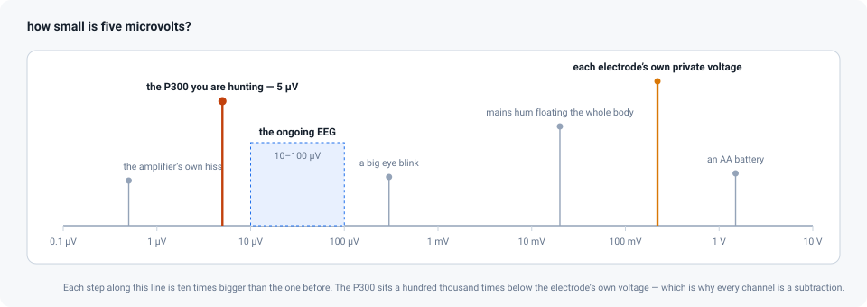
Because you never measure one electrode on its own — you measure the difference between two of them. Use two electrodes of the same material, sitting in the same kind of gel, and both carry almost the same private voltage, so subtracting one from the other cancels almost all of it. "Almost" is the word you will fight all session: what is left over, changing slowly as gel dries or one electrode warms up, is the drift you see wandering across the screen.
Can charge actually cross? (the most useful idea on this page)
Sooner or later a little charge has to get from the liquid onto the metal, or the electrode cannot report anything. Whether it can, and how easily, depends on the metal — and this single question divides electrodes into two families.
Family one: charge crosses freely. Silver coated with silver chloride has a reaction available that runs happily in both directions:
Ag + Cl⁻ ⇌ AgCl + e⁻
In words: a silver atom (Ag) and a chloride ion from the gel (Cl⁻) combine into silver chloride (AgCl), and in doing so release an electron (e⁻) into the metal. The double arrow ⇌ means the reaction runs just as willingly backwards. So when charge needs to cross in either direction, it simply does, and the electrode keeps reporting faithfully however slowly the signal changes. Electrodes like this are called non-polarizable, and they behave like a plain resistor.
Family two: charge piles up instead. Gold, platinum and stainless steel have no such easy reaction. Charge arriving at the boundary cannot get across, so it accumulates on both sides of the double layer. That arrangement — charge stored on two surfaces facing each other — is a capacitor, and a capacitor has a peculiar habit: it passes rapid changes and blocks slow, steady ones. Push on it quickly and the push is felt on the other side; lean on it steadily and nothing happens. Electrodes like this are called polarizable.
Real electrodes are a mixture of the two, with the resistance of the gel and the skin in the path as well. But the division explains most of what you will observe in a lab.
3. Six pictures to keep in your head
The physics above is the answer; these are the pictures that make it stick. Come back here whenever a later page uses a word you have half-forgotten.
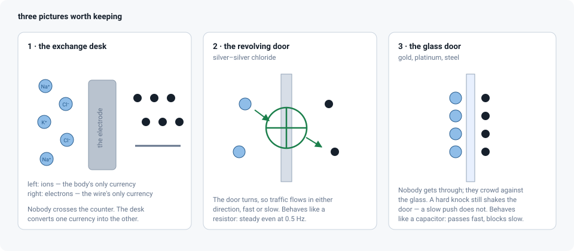
The exchange desk
Money makes this one easy. Inside the body, charge is carried by ions — atoms with a charge, drifting through salty fluid. Inside the cable, charge is carried by electrons. Those are two different currencies, and neither can be spent in the other's country: no ion ever travels up the cable to the amplifier.
The electrode is the exchange desk on the border. Ions arrive on one side, electrons leave on the other, and the chemical reaction at the metal surface sets the rate.
That is why the material matters so much. A good exchange desk serves everyone instantly, at the same rate, in both directions. A bad one has a long queue and quietly changes its rate as the day goes on — and a rate that keeps changing is exactly what drift is, when you watch it wander across the screen.
The revolving door and the glass door
Ask what happens when charge arrives at the metal from the gel.
Silver–silver chloride is a revolving door. People keep walking through, in either direction, whether they arrive in a rush or one at a time. Charge crosses freely, so the electrode reports honestly however fast or slowly the signal changes — including a P300, which is a bump lasting about half a second. Electrically, the boundary behaves like a plain resistor: something charge simply flows through.
Gold, platinum and steel are a glass door. Nobody gets through; they pile up against the glass on both sides. A crowd arriving suddenly still rattles the door and someone on the far side feels the shove — so fast wiggles do get across — but a slow, steady lean does nothing at all. That is a capacitor: it passes fast changes and blocks slow ones.
The consequence is practical. Brain activity that wobbles quickly gets through a gold electrode perfectly well — the alpha rhythm, for instance, a background wobble of about ten cycles a second that appears when someone closes their eyes. (One cycle a second is one hertz, written Hz, so alpha is "about 10 Hz".) The slow bump of a P300 does not fare nearly so well.
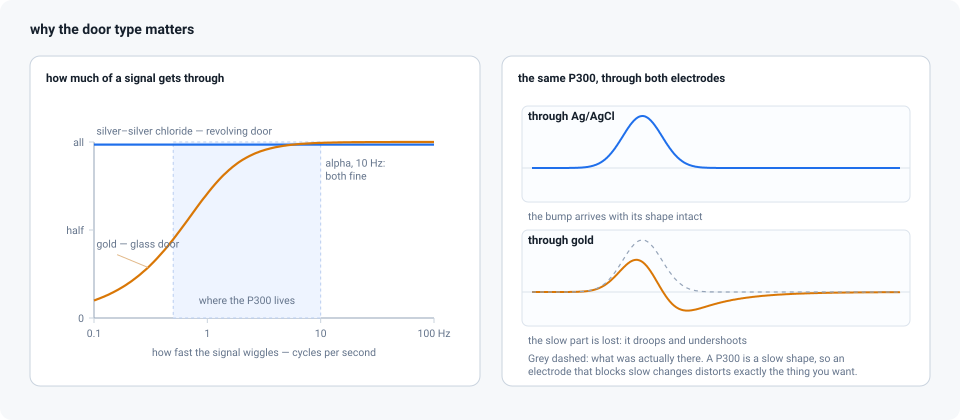
It is a voltmeter, not a bucket
The most common misconception is that the electrode collects electricity from the brain, the way a solar panel collects light. It does not, and it must not.
The amplifier is deliberately built so that almost nothing can flow into it. Every material resists the movement of charge to some degree, and that resistance is measured in ohms (written Ω): a thousand ohms is a kilohm, kΩ, and a million is a megohm, MΩ. The input of an EEG amplifier resists at tens of megohms or more, so the current that actually enters it is a few trillionths of an amp — nothing at all, by any everyday standard.
So think of a water gauge standing in a river, not a bucket. The gauge takes no water; it reports the level. The electrode reports the electrical "level" — the voltage — of the gel it sits in, and that level rises and falls with the currents spreading through the scalp underneath.
That also explains something you will see in the lab: an electrode with poor contact does not give you a smaller signal so much as a noisier one. The gauge is still reading the river; it is just wobbling in the wind while it does it.
Two bathroom scales
Every electrode carries its own private voltage — the half-cell potential from section 2 — of a couple of hundred millivolts (thousandths of a volt), which is tens of thousands of times the size of the EEG. Why does that not ruin everything?
Imagine weighing a letter by standing on a bathroom scale holding it, then standing on the scale without it. Each reading is dominated by your own 70 kg, but the difference between the two readings is the letter. EEG does exactly this: both electrodes carry a similar large offset, and the amplifier subtracts one from the other.
The catch follows immediately. It only works if both scales have the same offset and neither drifts while you weigh. Two electrodes of different metals are two scales calibrated differently; a drying electrode is a scale sliding slowly out of calibration. That is drift, in one image.
Two microphones in a noisy hall
The subtraction deserves its own picture. Put two microphones in a crowded hall, one right at a speaker's lips and one a metre away, and subtract the second recording from the first. The crowd noise reaches both microphones almost identically, so it cancels. The whisper, which only the near microphone hears, survives.
Your scalp electrode is the near microphone, the reference electrode is the far one, and the crowd is the electrical noise the whole body picks up from its surroundings — above all the hum radiated by the mains wiring in the walls, which alternates fifty times a second in most of the world and sixty in the Americas. Engineers score this cancellation with a number called the common-mode rejection ratio: in plain words, how well matched the two microphones are, and therefore how much of what reaches both alike disappears in the subtraction.
And the catch is the same as before: cancelling only works if the two paths are equally easy. One electrode connected through 5 kΩ and another through 200 kΩ is one microphone with a sock over it — the crowd arrives at different loudness in the two recordings and no longer cancels. That is why you match the electrodes to each other, not only make them good.
Sea level and the mooring rope
Finally, the question everyone asks. The reference is sea level; the ground is the mooring rope.
You cannot state the height of a hill without agreeing where zero is: heights are always differences from some agreed datum. The reference is that datum for every channel — change it and every number changes, though the hill did not move.
The ground does something else entirely. It is the rope that stops the boat drifting out of the dock: it holds the participant's whole body at a voltage the amplifier can cope with, so its inputs stay within the range they can measure. It never appears in any measurement. Untie it and nothing is measured from sea level any more — the boat has floated away, and every channel runs off the end of its scale.
4. The materials, and why each is used
Everything in the table below is a variation on the two doors. The second column says which door an electrode is: a revolving door lets charge across and so stays honest at slow speeds (the technical word is non-polarizable); a glass door does not, and drifts (polarizable). Three other words show up in the table and are worth having in advance:
- Sintered — powder pressed and baked into a solid pellet, so the useful chemistry runs all the way through the material instead of sitting on the surface.
- Chloridized — a thin layer of silver chloride grown on plain silver. Same chemistry, but only skin-deep, so scrubbing eventually wears it away.
- Inert — the metal reacts with almost nothing. It stays clean, and skin does not react to it either.
| Material | Which door | Where you meet it | Trade-off |
|---|---|---|---|
| Sintered Ag/AgCl (silver and silver chloride powder pressed into a pellet) | Revolving door | Research caps, ERP labs, the reference standard | Steadiest of all at slow speeds, and because the silver chloride goes right through the pellet it survives cleaning. Most expensive |
| Chloridized silver (a thin AgCl layer grown on silver) | Revolving door, while the layer lasts | Cheaper caps, home-made electrodes | Same physics, but the layer wears off with scrubbing and has to be grown again |
| Gold (usually gold-plated silver or copper) | Mostly glass door | Clinical cups, dry pin electrodes, long-term monitoring | Inert, kind to skin, easy to clean, no allergy problems. Drifts below about 1 Hz: fine for rhythms, weaker for slow responses like the P300 |
| Platinum / platinum–iridium | Glass door, extremely inert | Implanted and intracranial electrodes, some research surface electrodes | Chemically superb and safe to leave in the body; expensive, and it does pile charge up |
| Tin (Sn) | In between | Older and budget caps | Cheap and workable; hissier and driftier than Ag/AgCl |
| Stainless steel | Glass door | Dry electrodes, rugged field systems | Tough and cheap; poor at slow speeds, with more of the slow wandering noise |
| Conductive polymer / carbon / silver-loaded rubber | Varies | MRI-compatible caps, textile electrodes | Chosen for safety inside an MRI scanner — metal there can heat up — rather than for signal quality |
| Sponge / saline ("water-based") | Ag/AgCl behind a saline sponge | Fast-setup caps | No gel to wash out; dries out over an hour and drifts as it does |
5. The sensors themselves
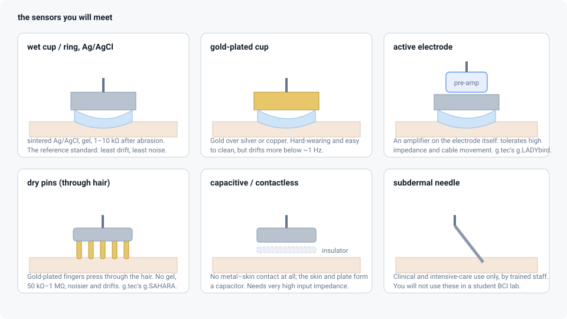
Wet cup or ring electrodes. A small Ag/AgCl cup held in a cap and filled with conductive gel through a hole in the top. The workhorse: quietest, least drifty, and the reason ERP labs smell faintly of electrolyte.
Gold cups. Glued to the scalp with conductive paste in clinical EEG, or mounted in caps. Durable and easy to clean; a little more drift, for the glass-door reason above.
Active electrodes. A wet or dry electrode with a tiny amplifier built into the electrode itself. This matters because the raw signal leaves the head both very small and very fragile — the path it comes through is a poor conductor, so the signal is easily disturbed. A metre of cable behaves like a radio aerial and picks up hum, and it changes what it picks up every time it swings. Strengthening the signal at the electrode, before it travels anywhere, makes cable movement and mains hum far less damaging and means the skin can be prepared less aggressively. g.tec's g.LADYbird electrodes work this way; so do the active systems from other manufacturers.
Dry electrodes. Gold-plated pins or fingers that push through the hair to touch the scalp, with no gel at all — g.tec's g.SAHARA is the one you are most likely to meet, on a g.Nautilus. Setup drops from twenty minutes to two. The price is that the path into the amplifier is ten to a hundred times harder than with gel, along with more drift and much greater sensitivity to movement. They work for a P300 speller; they work better once the participant has stopped fidgeting.
Capacitive / contactless electrodes. A metal plate separated from the skin by an insulator — even hair or thin fabric. No chemistry at all: the skin and the plate act as the two facing surfaces of a capacitor, the glass door taken to its limit. They demand extraordinarily high input resistance and careful shielding, and remain mostly a research topic.
Subdermal needles exist for intensive care and operating theatres. They are not for student BCI work, and you should not be the person inserting them.
6. Skin, gel and impedance
The metal is rarely the problem. The stratum corneum — the outermost layer of skin, which is dead, dry, flattened cells — is where nearly all the obstruction lives. Skin is built to keep the outside world out, and an EEG signal is part of the outside world trying to get in. That is what the whole preparation ritual is about:
- Abrasion with a blunt needle or a mildly gritty gel scrapes away part of that dead layer. It should tickle, never hurt or bleed.
- Conductive gel is salty water thickened into a paste. It supplies the chloride ions the silver–silver chloride reaction needs, and it fills the gap between a rigid cup and an irregular, hairy scalp so the path is continuous.
When you press impedance check in the recording software, the amplifier sends an extremely small alternating current out through the electrode and measures the voltage it produces, which tells it how hard that path is. The result is called the impedance of the electrode — resistance's slightly larger relative, meaning resistance to a current that keeps reversing direction — and it is measured in ohms, like resistance. Typical values:
| Setup | Impedance |
|---|---|
| Gel electrode, well prepared | 1–5 kΩ |
| Gel electrode, lazy preparation | 10–50 kΩ |
| Dry pins on clean scalp | 50 kΩ – 1 MΩ |
| Electrode that has come off | open circuit, often shown as ∞ |
Now a puzzle. The amplifier's own input resists at tens of megohms or more — thousands of times more than even a bad electrode. When two resistances sit in a row, they share the voltage between them in proportion, so a 20 kΩ electrode feeding a 100 MΩ input keeps about 99.98 % of the signal. Almost nothing is lost. So why chase low impedances at all? Two reasons, and neither is about losing signal:
- Heat makes hiss. Everything warm jiggles: in any resistance, the charge carriers move about randomly simply because the material is above absolute zero, and that random motion appears as a faint random voltage of its own. The more resistance, the more hiss. At 5 kΩ it is negligible beside the EEG; at 1 MΩ it is not. (Its formal name is Johnson, or thermal, noise, and it grows with the square root of the resistance.)
- Mismatch breaks the cancelling trick. Mains hum arrives at both inputs of the amplifier equally — but only if both paths are equally easy. If one electrode is at 5 kΩ and its neighbour at 200 kΩ, the hum shows up larger in one than the other, the amplifier sees a genuine difference between its two inputs, and it has no way to tell that difference from brain activity. Matched impedances matter as much as low ones.
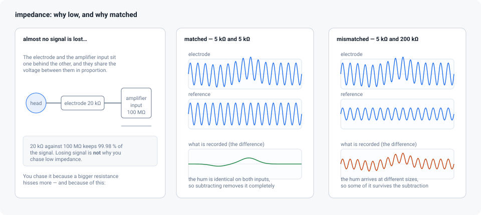
Two failure modes worth recognising when you watch the live traces: bridging, where gel spreads across the scalp between neighbouring electrodes so their traces become suspiciously identical, and drying, where impedance climbs over the course of an hour and slow drift creeps in with it.
7. How a number is actually computed
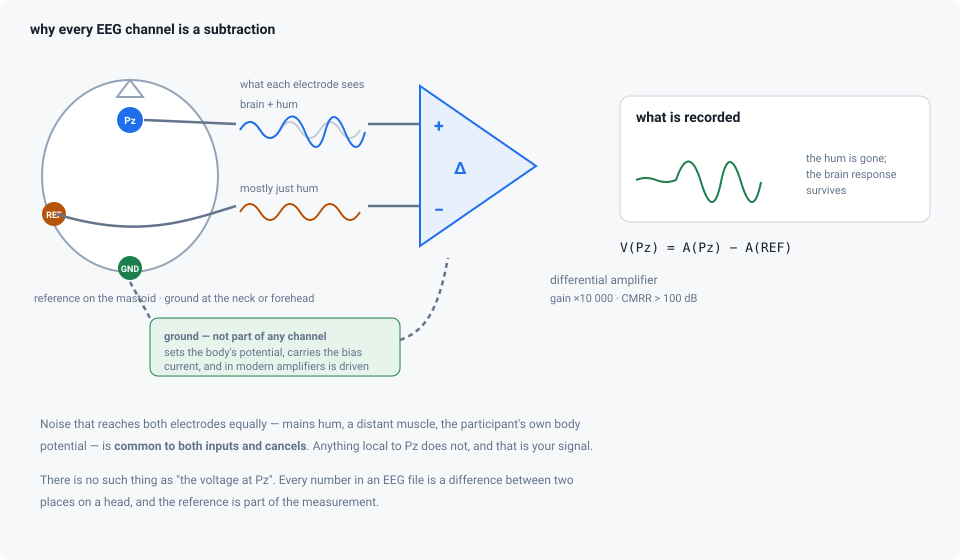
The two-microphone trick is built into a component called a differential amplifier (in practice a refined version called an instrumentation amplifier). It has two inputs, and it ignores whatever they have in common: what it puts out is the difference between them, made many times bigger.
output = gain × ( V(+) − V(−) )
Read that as: take the voltage at the first input, subtract the voltage at the second, and multiply what is left by the gain — simply how many times bigger the output is than the input. V(+) is your scalp electrode; V(−) is the reference.
Whatever is identical on both inputs — engineers call it the common-mode signal — is suppressed. How thoroughly is the common-mode rejection ratio from section 3 — CMRR on datasheets and in the figure above — quoted in decibels (dB), a compressed way of writing very large ratios: 100 dB means a factor of 100 000. A good EEG amplifier is above that, so anything arriving equally at both inputs comes out at least a hundred thousand times smaller than it went in.
This is what makes EEG possible at all. A participant sitting in an ordinary room acts as an aerial: their whole body floats up and down by tens of millivolts with the mains hum around them — thousands of times the size of the signal you want. But that hum is nearly the same at Pz and at the mastoid, so the subtraction removes it. The 5 µV P300 is not the same at both, so it survives.
After the amplifier comes the analogue-to-digital converter: a circuit that measures the voltage and writes it down as a whole number, over and over, many times a second. In a typical g.tec setup it does this 256 or 512 times a second — the sampling rate — with 24 bits of precision, meaning each measurement is recorded on a scale of about sixteen million steps, fine enough that a microvolt is still several steps. Its input range spans a few hundred millivolts, deliberately far wider than any EEG, so that the electrodes' own private voltages do not push the reading off the end of the scale. The numbers that finally reach pyspeller through Lab Streaming Layer have already been converted into microvolts.
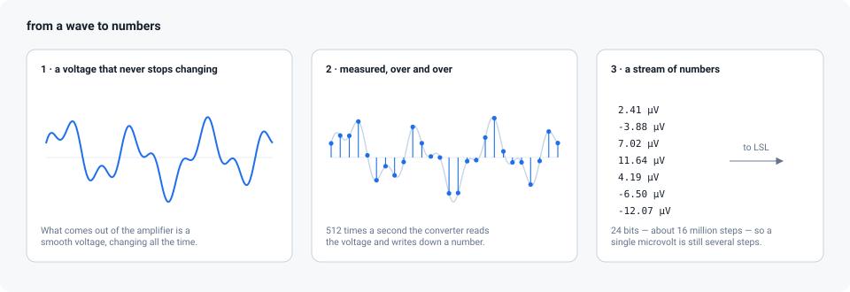
8. Reference and ground: the question everyone asks
They are different things and they are not interchangeable.
The reference is one of the two inputs of every channel. It is a signal electrode, sitting on the participant's head, that every other electrode is compared against. There is no such thing as "the voltage at Pz" — only "Pz minus wherever the reference is". So you choose a site that is electrically quiet and mechanically stable: a mastoid (the bony bump behind the ear), an earlobe, the tip of the nose, sometimes Cz on the top of the head.
The ground is the amplifier's own zero. It gives the participant's body a defined voltage relative to the amplifier's circuitry, so the inputs stay inside the range they can measure. It also gives somewhere to go to the tiny trickle of current that the amplifier's first transistors need in order to work at all — the bias current. The ground takes no part in any channel's arithmetic. In modern amplifiers it is often driven: the amplifier measures what the two inputs have in common, flips it upside down and feeds it back into the body through the ground electrode, actively pushing the shared hum towards zero. (The idea comes from ECG, where the electrode doing this sits on the leg and the technique is called the driven right leg.)
| Reference | Ground | |
|---|---|---|
| Purpose | the second input of every channel | sets the body's voltage, gives the bias current somewhere to go |
| Appears in the data? | yes — subtracted from every channel | no |
| Typical position | mastoid, earlobe, nose | AFz, forehead, neck, collarbone |
| If it comes loose | every channel goes noisy at once | everything runs off the end of the scale, or hums badly |
| Can you change it afterwards? | yes, arithmetically | no |
Changing the reference after the fact
Because every channel was recorded against the same reference, that reference
cancels out the moment you subtract one channel from another. So you can rebuild
the recording around a different zero later, with arithmetic alone and no new
measurement. In the lines below, A(x) means the true voltage at site x, and
V_x is the number your file actually contains:
recorded: V_a = A(a) − A(ref) V_b = A(b) − A(ref)
bipolar: V_a − V_b = A(a) − A(b) the reference cancels
average (CAR): V_a − mean(all V) removes what every channel shares
Laplacian: V_a − mean(V of neighbours)
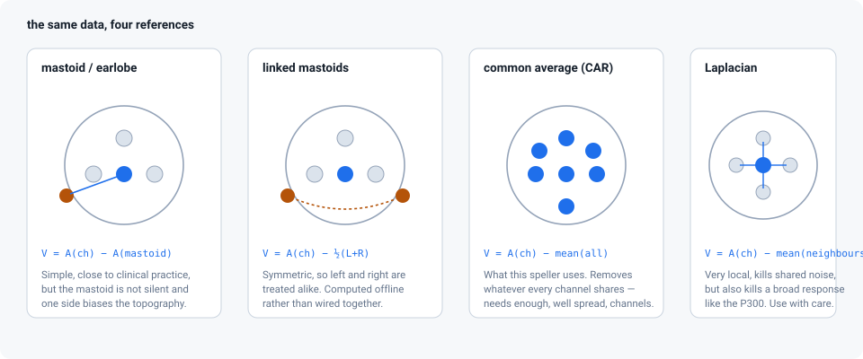
This speller uses the common average reference, the third line: preproc.car
subtracts the average across all channels from each channel before filtering. The
reasoning is that anything appearing on every electrode at once is almost
certainly not brain activity from one place — it is drift in the reference, mains
hum, or muscle activity from far away — so subtracting the average of all of them
removes most of it while leaving the P300, which is concentrated over the middle
and back of the head. Eight or more reasonably spread electrodes are enough for
this to work. A Laplacian, the fourth line, subtracts only the immediate
neighbours and so keeps just what is different from its surroundings; it is a
poor choice here, because it would subtract away a response that is broad by
nature.
9. What goes wrong, seen from the sensor side
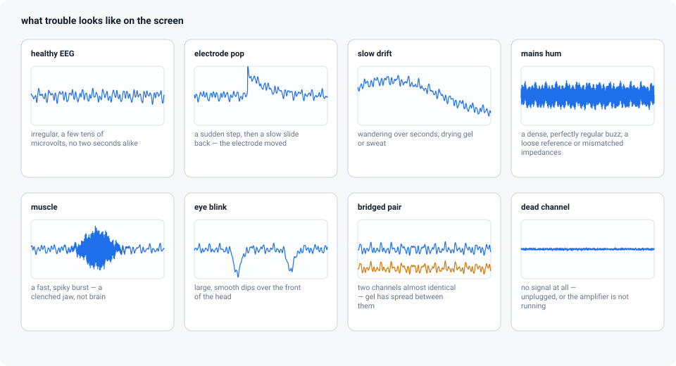
| On the screen | Usually means |
|---|---|
| One channel much larger than its neighbours | that electrode has poor contact, or has come off |
| A sudden step, then a slow return ("electrode pop") | the thin sandwich of charge at the metal was disturbed — the electrode moved, or there is an air bubble in the gel |
| Slow wandering over seconds, worse late in the session | drying gel, or sweat changing the skin's own voltage |
| Everything humming at 50 or 60 Hz | reference or ground loose, mismatched impedances, or a power supply sitting too near the cap |
| Two channels suspiciously identical | gel bridging between them |
| All channels dead flat | the amplifier is not acquiring, or the cap is unplugged |
| Fast, spiky activity over the temples | jaw and neck muscle, not brain |
10. What this means when you are capping up
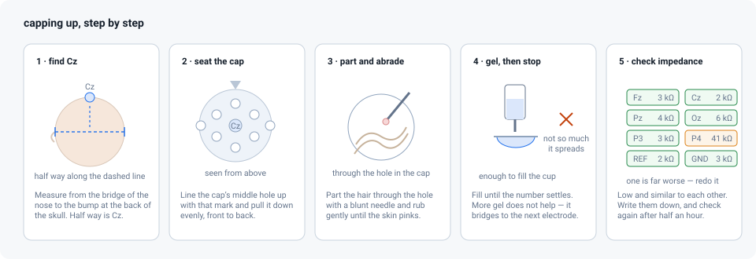
- Prepare the reference and ground as carefully as any channel — the reference is inside every number you record, and without the ground there are no numbers at all.
- Use one electrode material throughout, reference and ground included.
- Aim for impedances that are low and similar to each other, and write them down.
- Use enough gel to conduct, not so much that it bridges to the next electrode.
- With dry electrodes, expect much higher impedances and give the participant a minute to settle before recording.
- Re-check impedances after 30–40 minutes; gel dries.
Running a real session turns this into a procedure, and the g.tec page covers the specific hardware.
Further reading
- Nunez & Srinivasan, Electric Fields of the Brain — the standard reference on volume conduction and what the scalp can and cannot see.
- Webster (ed.), Medical Instrumentation: Application and Design — the electrode–electrolyte interface, half-cell potentials, and amplifier design, worked through properly.
- Teplan (2002), Fundamentals of EEG measurement — a short, readable overview.
- buffer_bci's EEG BCI tutorial worksheet — practical exercises on referencing and artefacts with a cap on a real head.